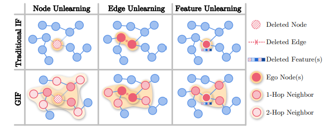

Yi Yang
My name is Yi Yang(杨益), a second-year student at the University of Science and Technology of China(USTC). I major in Statistics and minor in Communications at the School of the Gifted Young. Furthermore, I have gained valuable research experience in machine learning for about one year, specifically in the area of graph unlearning. Currently, I am interested in exploring topics related to machine unlearning, generative models, as well as their associated privacy and security concerns. I am passionate about bridging the gap between Statistics, machine learning and Social Science, as I believe that these fields can work in tandem to solve complex real-world problems.
News
[2023/04] The paper accpeted by WWW'23 is now publicly available on arXiv!
Research
in Machine Learning
Below are my research experiences and involved competitions in machine learning.
-

GIF: A General Graph Unlearning Strategy via Influence Function
WWW 2023 (Full, Accept Rate: 19.2%) May 2022 - Feb 2023*Jiancan Wu, *Yi Yang , Yuchun Qian, Yongduo Sui, Xiang Wang & Xiangnan He (* indicates equal contribution)
What we do: GIF, an unlearning algorithm designed for graph neural networks
Motivation: Considering the inter-dependency on GNN structure, apply statistical approximation algorithms to efficiently estimate parameter changes
Contribution: a novel unlearning algorithm and provide new perspective on unlearning mechanics
-

Parkinson's Disease Progression Prediction
Kaggle n/825 (rank %) March 2023 - presentTask: Predict the progression of Parkinson's Disease by utilizing protein and peptide data measurements from patients.
Challenges: The data is complex and messy, requiring the abstraction of concise features, and the selection of a suitable model.
Notes:Our implementation details, code and results will be shared upon completion of the competition.
-
Research
in Social Science
Below are my research experience in computational social science.
Education/Research
Experience
Below are my Education and Research Experience
University of Science and Technology of China
2021.09 - presentI was accepted into the School of the Gifted Young during my second year of high school, and I am deeply grateful to USTC for providing me with an early opportunity to experience higher education.
Lab for Data science(USTC)
2022.05 - presentLab for Data science is where I began my research in machine learning, advised by Prof. Xiangnan He. I am honored to have conducted research exploration and participated in a project on graph unlearning.
Miscellaneous
I have a passion for practicing Chinese calligraphy, reading poetry and novels, and always spend my leisure time with cute animals. Currently, I am also studying hand-drawing and trying to read Chinese contemporary literature, and stream-of-consciousness novels, especially Virginia Woolf.